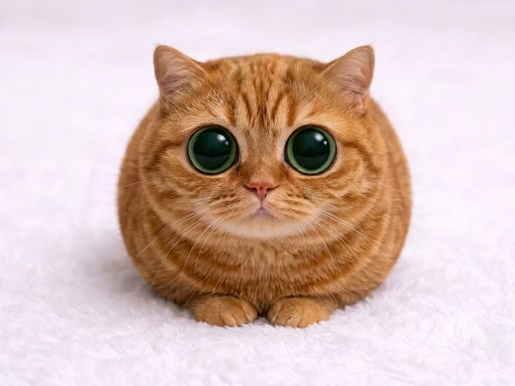
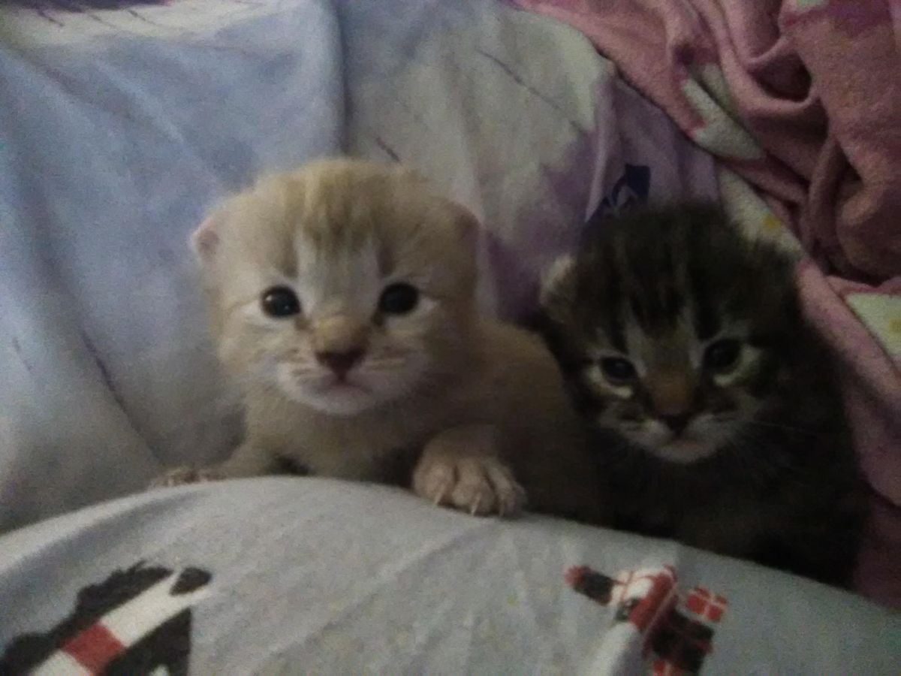

Я долго думал, как сказать тебе всё, что чувствую.
И decided сделать это здесь — медленно, красиво, по-настоящему.
Знаешь, есть люди, которые просто входят в жизнь. А есть те, кто становится самой жизнью.
Ты — вторая. Ты не просто человек рядом. Ты то, с чем я сверяю каждый свой день, каждая мысль возвращается к тебе, как будто ты — мой внутренний компас.
И я не перестаю удивляться тому, как сильно можно любить.
В твоей улыбке помещается всё моё спокойствие. В твоём голосе — весь мой дом. В твоих глазах — все мои планы на будущее.
Каждое мгновение с тобой — это кадр, который я хочу сохранить навсегда.


Я люблю тебя не за что-то. Не за красоту, не за доброту, не за то, как ты умеешь сделать день лучше. Хотя и за это тоже.
Я люблю тебя просто потому, что ты — это ты. За ту тишину, которая становится уютной, когда ты рядом. За то, как время замедляется в твоих объятиях. За то, что с тобой я — настоящий.
Ты — моя нежность, моя сила, мой самый тёплый вечер и самое светлое утро.
За то, что ты рядом. За то, что умеешь слушать. За то, что принимаешь меня любым. За то, что каждый день делаешь лучше, чем вчера.
И за то, что я могу писать такие слова — потому что ты их заслуживаешь.
Я обещаю быть тем, кто будет рядом —
в ясные дни и в грозы, в смехе и в тишине.
Обещаю выбирать тебя каждый день заново. Обещаю любить тебя так, чтобы ты никогда не сомневалась в этом ни на секунду.
С любовью,
[Ваше имя]